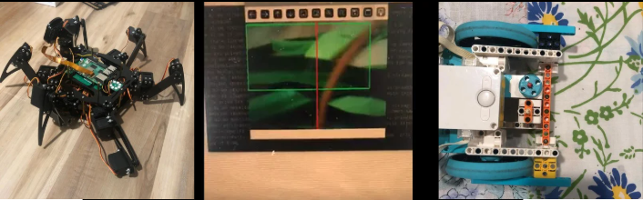
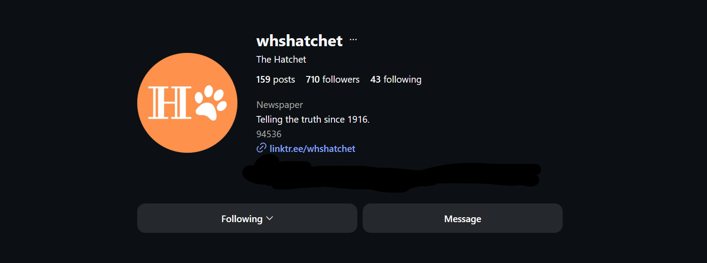
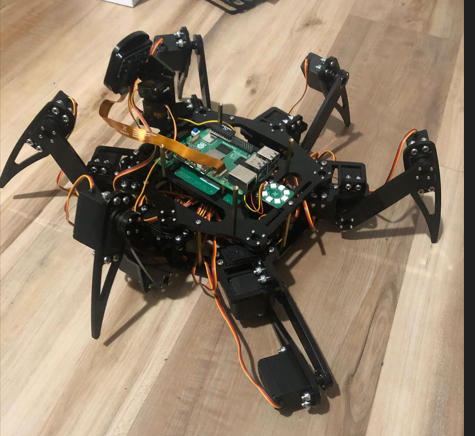
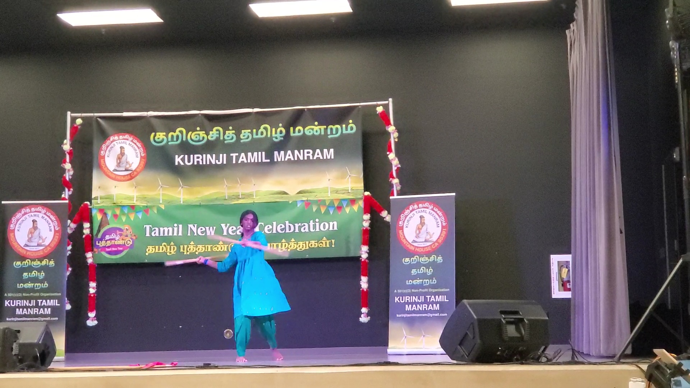

Welcome to my personal portofolio!
Hello! My name is Nikita Murugesan, and I am a rising junior at Washington High School! Some of my non-academic interests include playing the trombone or violin, Bharathanatyam, Learning to edit videos, training for triathlons,skateboarding, rollerblading, reading, binging shows, and teaching Silambam, an indian martial art
Introduction
I am an individual who is passionate about technology and innovation. I enjoy exploring new ideas and bringing them to life through code, design, and problem-solving. In the nearing future I wish to start my own Startup that is software-based. As for my current responsibilities, I am currently working on several projects that involve web development and design. I also serve Vice President of Community and Family Affairs. Additionally, I serve as a co-editor of the Opinion section at my school's newspaper. Outside of school, I have founded a non-profit which specialized in teaching the art of Silambam. I also aspire to grow this non-profit to reach more people around the world and make a positive impact in the community. I also am an avid competitor at DECA, placing first in state for the 2025 Buisness Pitch Challenge, 11th in State for Professional Selling, and 3rd in NorCal for Principles of Entrepreneurship. I am also heavily interested in computer science and programming in personal fianance. I have also placed third in my local district science fair in the category of Software for my work of color based recognition software to target fuel accumulation in areas with limited accessibility for wildfire prevention.
Feel free to reach out to me if you have any questions or would like to collaborate on a project or just chat about anything!
Project Gallery



